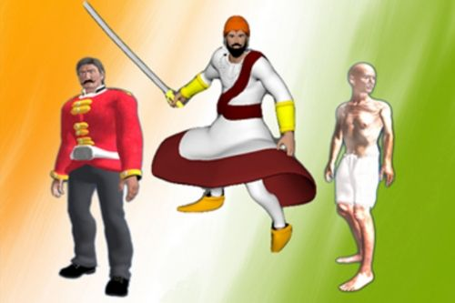
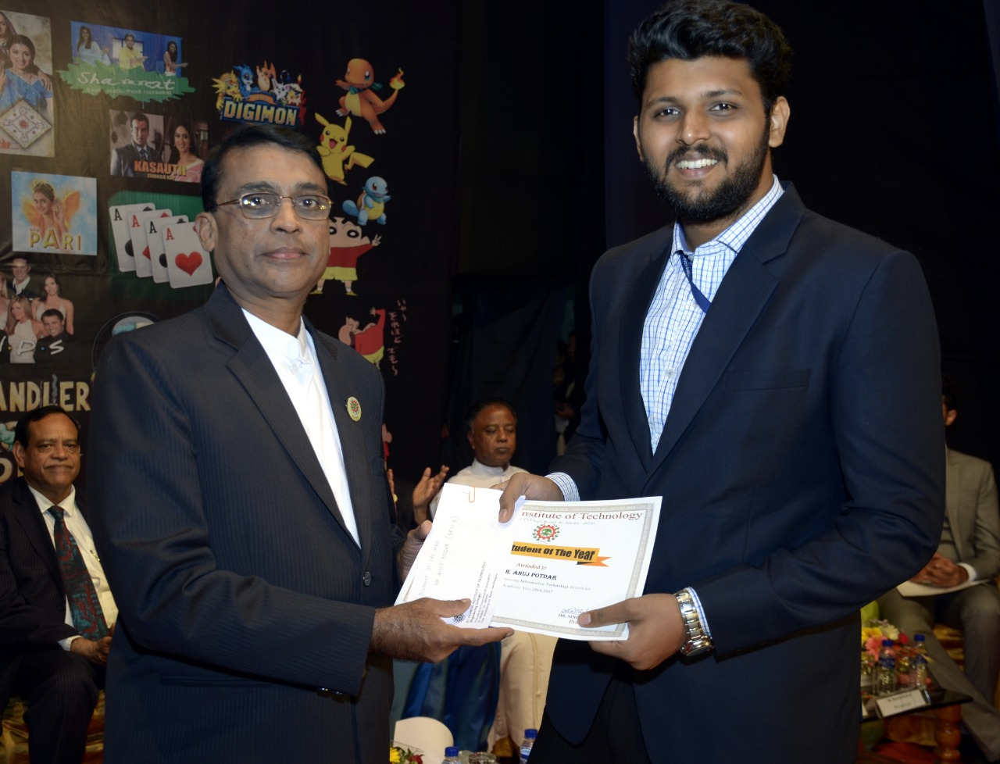

Legends of the Golden Sparrow is a game that teaches school students the history of India before independence. It moves through the period in order, with levels built around historical figures. The player controls each level's protagonist, switching between first-person and third-person views as the gameplay needs, with stealth, running and fighting sections depending on the level.
Each level has three parts:
- Cut-scenes that set out the facts and background of the events.
- Gameplay that puts the student inside the story.
- A quiz on the level, which the student must pass to unlock the next one.
The project won first prize, the Shri M. M. Rai Memorial Award, for its presentation at the Colloquium on “I.T. for Society” at St. Francis Institute of Technology in January 2017.

That year I was also named the institute's Best Student of the Year across all departments, recognising the project together with three consecutive years as class representative. The award was presented by the Director at the Annual Day.
Details
- Role
- Gameplay design; the Student, Gandhi and Shivaji Maharaj levels and cut-scenes; the Mangal Pandey cut-scene
- Dates
- July 2016 to March 2017
- Downloads
- Project report · macOS build (2020) · Windows build (2017) · Android build (2017)